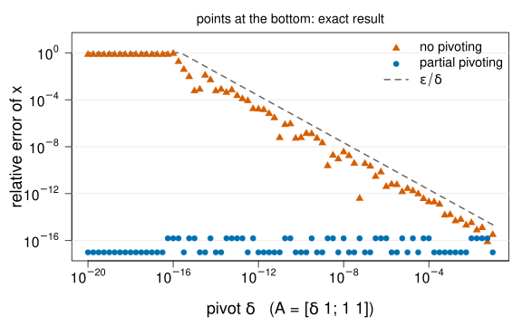
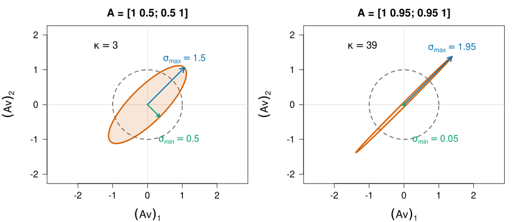
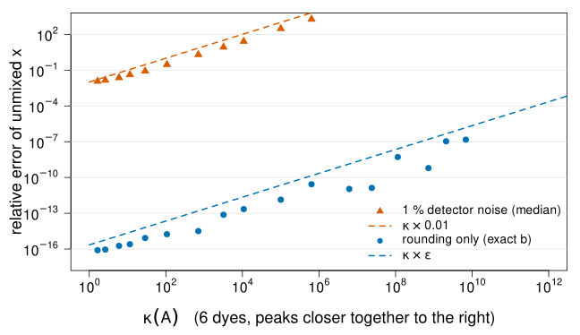
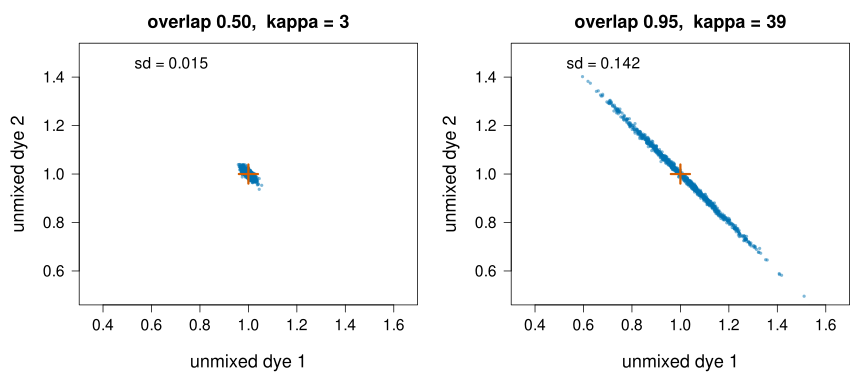

Pivoting, norms and conditioning
Part 3 — Linear systems
Numerical analysis for biologists
About this lecture
In Gaussian elimination as LU A\mathbf x = \mathbf b by elimination and assumed every step was fine. Today: two different ways the answer can still be wrong.
The algorithm’s fault. Elimination divides by the pivot. A tiny pivot destroys the answer; partial pivoting (swapping rows) fixes it.The problem’s fault. Some systems amplify errors in \mathbf b whatever the algorithm. To measure this we need sizes of vectors and matrices: norms (1 , 2 , \infty ).The condition number \kappa(A) : lose about \log_{10}\kappa digits.
Residual vs error : a small residual does not mean a small error.Biology: spectral unmixing in flow cytometry. Dyes with overlapping spectra give an ill-conditioned matrix, and detector noise is amplified.
This lecture has the same two-source structure as Error, conditioning and stability in Part 1: an unstable algorithm (elimination without pivoting) and an ill-conditioned problem (overlapping dyes). The cures differ: the first is fixed by changing the algorithm (pivoting, which every library already does); the second only by changing the experiment (the dyes or the detectors). We assume LU from the previous unit: elimination, multipliers, forward and back substitution.
Where we left off: two dyes
At the end of Error, conditioning and stability
<- matrix (c (1 , 0.95 ,0.95 , 1 ), nrow = 2 , byrow = TRUE )solve (A, c (1.95 , 1.95 ))# [1] 1 1 solve (A, c (1.96 , 1.94 )) # b off by 0.5 % # [1] 1.2 0.8 kappa (A, exact = TRUE )# [1] 39
A 0.5 % change in the detector readings moves the dye amounts by 20 %.
Today: why 39, what \kappa measures, and what to do about it.
Pick up the teaser with the same numbers. Each equation is a line in the (x1, x2) plane; the two lines are nearly parallel, so their intersection slides a long way when either one moves a little. By the end of the lecture students can compute the 39 by hand and explain why the perturbation (0.01, -0.01) was the worst possible one.
Spectral unmixing is A\mathbf x = \mathbf b
Each dye emits over a range of wavelengths. Each detector sees light from several dyes.
A_{ij} = signal in detector i per unit of dye j (measured from single-stained controls).\mathbf b = detector readings for one cell; \mathbf x = dye amounts.Solve A\mathbf x = \mathbf b for every cell : millions of times.
Two dyes, detectors at the two peaks: A = \begin{pmatrix}1 & c\\ c & 1\end{pmatrix} , overlap c . Close peaks give c = 0.95 , our matrix.
Flow cytometry compensation and spectral unmixing are the same linear algebra. Classic compensation uses one detector per dye; spectral cytometers use 30 to 60 detectors and solve a least-squares problem (Part 4). We keep it square here: as many detectors as dyes. The spectra are Gaussian with width 30 nm, a toy model of real emission spectra. With peaks 35 nm apart, detector 1 sees half as much of dye 2 as of dye 1 (c = 0.5); 10 nm apart, 95 % (c = 0.95). The same algebra appears in fluorescence microscopy (linear unmixing of spectral images) and in compensation matrices for older cytometers.
Recap: elimination as LU
Row 2 minus m = a_{21}/a_{11} times row 1 (the pivot is a_{11} ):
\begin{pmatrix}1 & 0.95\\ 0.95 & 1\end{pmatrix}
\;\xrightarrow{\;m = 0.95\;}\;
\begin{pmatrix}1 & 0.95\\ 0 & 1 - 0.95^2\end{pmatrix}
= \begin{pmatrix}1 & 0.95\\ 0 & 0.0975\end{pmatrix} = U,
\qquad L = \begin{pmatrix}1 & 0\\ 0.95 & 1\end{pmatrix}
A = LU . Solve L\mathbf y = \mathbf b (forward), then U\mathbf x = \mathbf y (back).Each step divides by a pivot u_{kk} . Nothing so far checks its size .
Cost \tfrac23 n^3 for the factorisation, 2n^2 per right-hand side (from Gaussian elimination as LU
One-slide recap only; the previous unit did this properly. The point to carry forward: the multipliers are entries divided by the pivot, and back substitution divides by the pivots again. If a pivot is zero the method stops; if it is tiny, we will see that it silently returns garbage. Note that the second pivot 0.0975 is already small: the near-singularity of A shows up in U.
A zero pivot, a tiny pivot
<- function (A, b) {<- nrow (A)for (k in 1 : (n - 1 )) for (i in (k + 1 ): n) {<- A[i, k] / A[k, k] # multiplier <- A[i, ] - m * A[k, ]; b[i] <- b[i] - m * b[k]backsolve (A, b) # back substitution solve_nopivot (matrix (c (0 , 1 , 1 , 0.3 ), 2 , byrow = TRUE ), c (1 , 1.3 ))# Error in backsolve(A, b) : singular matrix in 'backsolve'. First zero in diagonal [1] <- matrix (c (1e-20 , 1 , 1 , 1 ), 2 , byrow = TRUE )solve_nopivot (A1, c (1 , 2 ))# [1] 0 1 solve (A1, c (1 , 2 ))# [1] 1 1
Zero pivot: dye 1 gives no signal in detector 1 (the order of detectors is arbitrary). The multiplier is 1/0 ; the method stops.
Tiny pivot: no warning , and x_1 = 0 instead of 1 .
backsolve (https://stat.ethz.ch/R-manual/R-devel/library/base/html/backsolve.html) solves an upper triangular system by back substitution. The zero-pivot case is realistic: the rows of A are just the detectors in some order, and nothing guarantees that detector 1 sees dye 1. Both matrices are perfectly well conditioned (we will compute kappa about 2.6 for A1): the problem is easy, the algorithm fails. That is instability. solve() gets it right because it pivots.
What went wrong
With \delta = 10^{-20} : multiplier m = 1/\delta = 10^{20} .
\begin{pmatrix}\delta & 1 & \mid & 1\\ 1 & 1 & \mid & 2\end{pmatrix}
\;\to\;
\begin{pmatrix}\delta & 1 & \mid & 1\\ 0 & 1 - 10^{20} & \mid & 2 - 10^{20}\end{pmatrix}
\;\approx\;
\begin{pmatrix}\delta & 1 & \mid & 1\\ 0 & -10^{20} & \mid & -10^{20}\end{pmatrix}
1 - 10^{20} rounds to -10^{20} : the 1 and the 2 of row 2 are lost (they are below the gap between doubles near 10^{20} ).x_2 = 1 (fine), then x_1 = (1 - x_2)/\delta = 0/\delta = 0 : catastrophic cancellation , divided by a tiny number.The computed L and U belong to a different matrix: LU has 0 where A has 1 in position (2,2) .
Do this on the board. The huge multiplier copies row 1, scaled by 1e20, into row 2 and swamps what row 2 contained. The second equation is effectively replaced by a multiple of the first, so the information that x1 + x2 = 2 is gone. Back substitution then cancels 1 - 1 = 0. Check LU: L = [1 0; 1e20 1], U = [1e-20 1; 0 -1e20], LU = [1e-20 1; 1 0]. The (2,2) entry 1 has vanished: the backward error is 100 %, which is the precise meaning of “unstable”.
Error grows like \varepsilon/\delta

Without pivoting the error is about \varepsilon/\delta : every factor 10 smaller pivot costs one digit. Below \delta \approx 10^{-16} : all lost.
With pivoting: full accuracy for every \delta . The problem was never hard.
The experiment: A = [delta 1; 1 1], b = (1, 2), exact solution known in closed form, relative error of each method. The orange triangles follow the dashed line epsilon/delta, the error-vs-parameter plot for this failure. The blue dots sit at rounding level (points at the bottom are exact). A pivot of 1e-8, which is not exotic in a larger matrix after a few elimination steps, already costs half the digits.
Partial pivoting
Before eliminating column k , swap rows so the entry of largest absolute value in that column (on or below the diagonal) becomes the pivot.
\begin{pmatrix}\delta & 1 & \mid & 1\\ 1 & 1 & \mid & 2\end{pmatrix}
\;\xrightarrow{\text{swap}}\;
\begin{pmatrix}1 & 1 & \mid & 2\\ \delta & 1 & \mid & 1\end{pmatrix}
\;\xrightarrow{m = \delta}\;
\begin{pmatrix}1 & 1 & \mid & 2\\ 0 & 1 - \delta & \mid & 1 - 2\delta\end{pmatrix}
Now x_2 = (1-2\delta)/(1-\delta) \approx 1 , x_1 = 2 - x_2 \approx 1 . Correct.
Every multiplier satisfies |m| \le 1 , so no row is scaled up and swamps another.
Swapping rows = reordering the equations (detectors). The solution does not change.
The rule is simple and cheap: one search down a column per step, O(n^2) in total, nothing next to the O(n^3) elimination. Bounded multipliers mean the entries of U cannot grow much in practice, which is what keeps the rounding errors small. “Partial” because only rows are swapped; complete pivoting also swaps columns and is rarely worth it.
Partial pivoting in code
<- function (A, b) {<- nrow (A)for (k in 1 : (n - 1 )) {<- which.max (abs (A[k: n, k])) + k - 1 # largest entry in column k c (k, p), ] <- A[c (p, k), ]; b[c (k, p)] <- b[c (p, k)] # swap rows for (i in (k + 1 ): n) {<- A[i, k] / A[k, k] # now |m| <= 1 <- A[i, ] - m * A[k, ]; b[i] <- b[i] - m * b[k]backsolve (A, b)solve_pivot (A1, c (1 , 2 ))# [1] 1 1
Three extra lines. solve()dgesv), which does exactly this, in optimised code.
which.max returns the position within the sub-column k:n, so we add k - 1 to get the row number. The swap uses R’s vector indexing: A[c(k, p), ] <- A[c(p, k), ] exchanges two rows in one line. Students write this themselves in the exercise (C2) and compare with solve(). Python: scipy.linalg.lu_factor / lu_solve and numpy.linalg.solve use the same LAPACK routine.
PA = LU The row swaps are recorded in a permutation matrix P (the identity with its rows reordered):
PA = LU, \qquad A\mathbf x = \mathbf b \;\Longleftrightarrow\; L U\mathbf x = P\mathbf b.
Factor once (\tfrac23 n^3 ), then for each cell: permute \mathbf b , forward and back substitute (2n^2 ).
Partial pivoting is backward stable in practice : the computed \mathbf x is the exact solution of (A + \Delta A)\mathbf x = \mathbf b with \|\Delta A\| \approx \varepsilon \|A\| . (Rare matrices defeat it; they almost never occur in applications.)
So after pivoting, any remaining error is the problem’s . To measure it we need the size of a vector and of a matrix.
In R, Matrix::lu returns the factorisation with P, L and U (expand() gives the three matrices); in Python scipy.linalg.lu. The backward-stability statement is the matrix version of “the answer is exact for a nearby input” from Error, conditioning and stability. The famous exception (Wilkinson’s matrix, entries of U growing like 2^n) is a curiosity; LAPACK and every statistics package rely on partial pivoting. Transition: the 2-dye system was solved by a pivoting solve() and still moved by 20 %. That is conditioning, and we now build the tools to measure it.
Pivoting does not rescue the two dyes
solve_pivot (A, c (1.96 , 1.94 )) # A = [1 0.95; 0.95 1] # [1] 1.2 0.8
Same answer as solve(): it is the exact solution of the perturbed system.
The algorithm is innocent. The problem amplifies the 0.5 % change in \mathbf b to 20 % in \mathbf x .
To say “0.5 %” and “20 %” for vectors , we need a size: a norm .
A short bridge slide. No pivoting is needed here (0.95 < 1, so no swap), and the arithmetic is accurate to 16 digits. What is uncertain is the data b: detector readings have 1 % or worse noise. So the question becomes: how much can the solution move, relative to its size, when b moves by a given relative amount?
Vector norms
A norm \|\mathbf v\| is a length. Three common ones, for \mathbf v = (3, -4, 12) :
1-norm
\|\mathbf v\|_1 = \sum_i \lvert v_i\rvert 3 + 4 + 12 = 19
2-norm (Euclidean)
\|\mathbf v\|_2 = \sqrt{\sum_i v_i^2} \sqrt{9 + 16 + 144} = 13
\infty -norm (max)\|\mathbf v\|_\infty = \max_i \lvert v_i\rvert 12
<- c (3 , - 4 , 12 )c (sum (abs (v)), sqrt (sum (v^ 2 )), max (abs (v)))# [1] 19 13 12
Always \|\mathbf v\|_\infty \le \|\mathbf v\|_2 \le \|\mathbf v\|_1 , and they differ by at most a factor n . For error sizes, any of them will do.
Relative error of a vector: \|\hat{\mathbf x} - \mathbf x\| / \|\mathbf x\| .
All three are “lengths”: zero only for the zero vector, scale with |c| when the vector is multiplied by c, and obey the triangle inequality. The 1-norm is the total (e.g. total absolute error over all dyes), the 2-norm the ordinary distance, the infinity-norm the worst single component. For a vector of n numbers they differ by at most a factor n, so “small” means the same in all of them for small n. R’s norm() wants a matrix; norm(v, “2”) happens to work for a vector, the others need as.matrix(v). Python: np.linalg.norm(v, 1), (v), (v, np.inf).
Unit balls
All vectors of norm 1, in 2D:
\|\cdot\|_1 : a diamond. \|\cdot\|_2 : a circle. \|\cdot\|_\infty : a square.Teaser: \Delta\mathbf b = (0.01, -0.01) , \mathbf b = (1.95, 1.95) . In the 2-norm \|\Delta\mathbf b\|_2/\|\mathbf b\|_2 = 0.01/1.95 = 0.51\,\% .
\Delta\mathbf x = (0.2, -0.2) , \mathbf x = (1, 1) : \|\Delta\mathbf x\|_2/\|\mathbf x\|_2 = 20\,\% .Ratio: 0.2 / 0.005128 = 39 .
The picture explains the name of the infinity-norm (the limit of the p-norm as p grows) and makes the inequalities visible: the diamond sits inside the circle, which sits inside the square. In the teaser both relative changes happen to be the same in all three norms, because all components have the same size. The ratio 39 is exactly kappa: the teaser perturbation is the worst case, as we will see.
Matrix norms
How much can A stretch a vector? \;\|A\| = \max_{\mathbf v \ne 0} \dfrac{\|A\mathbf v\|}{\|\mathbf v\|}
\|A\|_1 largest absolute column sum
1.95
\|A\|_\infty largest absolute row sum
1.95
\|A\|_2 largest stretch \sigma_{\max}
1.95
c (norm (A, "1" ), norm (A, "I" ), norm (A, "2" ))# [1] 1.95 1.95 1.95 svd (A)$ d # singular values: all stretch factors # [1] 1.95 0.05
\sigma_{\max} , \sigma_{\min} : the largest and smallest singular values . For a symmetric matrix they are the absolute eigenvalues (here 1.95 and 0.05 ).
The definition is “induced by the vector norm”: the largest factor by which A can lengthen any vector. For the 1 and infinity norms there are exact formulas students can do by hand (column sums, row sums). The 2-norm needs the singular values, which we only use as numbers here; The SVD, rank deficiency and regularisation (Part 4) explains them. For a symmetric A, the eigenvalues are 1 + 0.95 and 1 - 0.95, eigenvectors (1, 1) and (1, -1). norm() in R takes type “1”, “I” (infinity), “2” or “F” (Frobenius, not induced).
A matrix turns a circle into an ellipse

Longest axis \sigma_{\max} , shortest \sigma_{\min} . With overlap 0.95, the direction (1, -1) (dye 1 minus dye 2 ) is squashed to 0.05 .
Solving A\mathbf x = \mathbf b undoes this: it stretches that direction by 1/\sigma_{\min} = 20 .
The dashed circle is all unit vectors; the orange ellipse is A times them. For c = 0.5 the ellipse is fat; for c = 0.95 it is almost a line segment along (1, 1): the detectors see the sum of the dyes well and the difference hardly at all. Inverting A must blow the thin direction back up, by 1/0.05 = 20, and any noise that lies in that direction is blown up with it. That is the whole story of ill-conditioning in one picture.
The condition number of a matrix
\kappa(A) = \|A\|\,\|A^{-1}\| \;\overset{\text{2-norm}}{=}\; \frac{\sigma_{\max}}{\sigma_{\min}}
If A\mathbf x = \mathbf b and A(\mathbf x + \Delta\mathbf x) = \mathbf b + \Delta\mathbf b , then
\frac{\|\Delta \mathbf x\|}{\|\mathbf x\|} \;\le\; \kappa(A)\,\frac{\|\Delta \mathbf b\|}{\|\mathbf b\|}.
Why: \Delta\mathbf x = A^{-1}\Delta\mathbf b , so \|\Delta\mathbf x\| \le \|A^{-1}\|\,\|\Delta\mathbf b\| ; and \|\mathbf b\| \le \|A\|\,\|\mathbf x\| . Divide.
Same idea as \kappa = |x f'/f| in Error, conditioning and stability relative errors.
\kappa \ge 1 always. \kappa = 1 : no amplification. A singular: \kappa = \infty .
Two lines of algebra, both from the definition of the matrix norm. The bound is a worst case: equality needs b in the most stretched direction and Delta b in the least stretched one. Errors in A itself (the reference spectra are measured too) obey a similar bound with the same kappa, to first order. kappa depends on the norm, but only by a modest factor; “kappa = 39 or 40” is what matters, not the digits.
Two dyes by hand: \kappa = 39
A^{-1} = \frac{1}{1 - 0.95^2}\begin{pmatrix}1 & -0.95\\ -0.95 & 1\end{pmatrix}
= \begin{pmatrix}10.26 & -9.74\\ -9.74 & 10.26\end{pmatrix}
\|A\|_\infty = 1.95 , \|A^{-1}\|_\infty = 10.26 + 9.74 = 20 , so \kappa_\infty = 1.95 \times 20 = 39 .2-norm: \sigma_{\max}/\sigma_{\min} = 1.95/0.05 = 39 . Overlap c : \kappa = \dfrac{1 + c}{1 - c} .
Worst case : \mathbf b \propto (1, 1) (both dyes, the stretched direction), \Delta\mathbf b \propto (1, -1) (anti-correlated detector errors). The teaser was exactly this: amplification 39 .Noise along (1, 1) is not amplified at all (factor 1).
Everything here is pen and paper; the exercise repeats it. Point out that the inverse has large entries of opposite sign: the unmixed dye 1 is about 10 times detector 1 minus 10 times detector 2, a difference of two large, nearly equal numbers. That is cancellation again, and it is built into the problem, not the algorithm. kappa = (1 + c)/(1 - c): c = 0.5 gives 3, c = 0.9 gives 19, c = 0.99 gives 199.
Computing \kappa in R
kappa (A, exact = TRUE ) # 2-norm, from the singular values # [1] 39 kappa (A) # default: a fast estimate # [1] 39.95 1 / rcond (A) # 1-norm estimate, from the LU factors # [1] 39
kappa()exact = TRUE is an estimate , good to a small factor; enough for counting digits.exact = TRUE costs an SVD (O(n^3) , a few times dearer than solve()). rcond() costs only O(n^2) once the LU factors exist.Python: np.linalg.cond(A); Rust (nalgebra): singular_values(), max / min.
Three routes to the same number. The default kappa() works from a QR factorisation and a triangular estimate; it is off by 2 % here, which never matters for the digits rule. rcond is the reciprocal condition number in the 1-norm, estimated by LAPACK from the LU factors; a value near .Machine$double.eps (about 1e-16) means “numerically singular”, and solve() itself refuses with “system is computationally singular: reciprocal condition number = …” when it falls below that. Never compute kappa as norm(A) * norm(solve(A)) for a large matrix: forming the inverse is wasteful.
Rule of thumb: lose \log_{10}\kappa digits

Six dyes, peaks moved closer: \kappa from 1.6 to 10^{10} . Blue: only rounding (\le \kappa\varepsilon ). Orange: 1 % noise (\approx \kappa \times 0.01 ).
16 digits survive \kappa = 10^6 ; 2-digit data survive only \kappa \lesssim 10 .
The panel: 6 Gaussian spectra of width 30 nm, peaks spaced 60 nm down to 4 nm, detectors at the peaks. Exact abundances x = (5, 1, 3, 2, 4, 1), b = A x computed in double precision, then solve(). The blue points lose about log10 kappa digits from 16, below the kappa times epsilon line because the bound is a worst case. The orange points add 1 % multiplicative noise to every detector (median over 200 noise draws) and follow kappa times 0.01: with kappa = 100 the unmixed values are off by 100 %. This is the asymmetry from Part 1 again: rounding errors need a huge kappa to hurt, measurement errors only a modest one.
Residual vs error
The residual \mathbf r = \mathbf b - A\hat{\mathbf x} is computable; the error \hat{\mathbf x} - \mathbf x is not (we do not know \mathbf x ).
<- c (1.95 , 1.95 ); x <- c (1 , 1 ) # true dye amounts <- function (u, v) sqrt (sum ((u - v)^ 2 )) / sqrt (sum (v^ 2 ))<- c (1.2 , 0.8 ); xb <- c (1.01 , 1.01 ) # two candidate answers c (resid = rel (A %*% xa, b), error = rel (xa, x))# resid error # 0.005128205 0.200000000 c (resid = rel (A %*% xb, b), error = rel (xb, x))# resid error # 0.01 0.01
xa has the smaller residual but a 20 times larger error.Bound: \dfrac{\|\hat{\mathbf x} - \mathbf x\|}{\|\mathbf x\|} \le \kappa(A)\,\dfrac{\|\mathbf r\|}{\|\mathbf b\|} .
The residual measures how well x-hat fits the equations; the error, how close it is to the truth. With an ill-conditioned A they disagree: xa = (1.2, 0.8) changes x in the squashed direction (1, -1), which A hardly sees, so the fit stays good. xb changes x in the stretched direction (1, 1), which A sees fully. The bound is the same as before with Delta b replaced by the residual: x-hat is the exact solution for b - r. So a small residual guarantees a small error only when kappa is small.
A stable solver always has a small residual
<- function (n, spacing, width = 30 ) { # Gaussian spectra <- 500 + spacing * (0 : (n - 1 )) # dye peaks = detectors (nm) outer (peak, peak, function (d, p) exp (- (d - p)^ 2 / (2 * width^ 2 )))<- panel (6 , 6 ); xt <- c (5 , 1 , 3 , 2 , 4 , 1 ) # 6 dyes, peaks 6 nm apart <- drop (P %*% xt); xh <- solve (P, b6)c (kappa = kappa (P, exact = TRUE ), resid = rel (P %*% xh, b6), error = rel (xh, xt))# kappa resid error # 1.141239e+08 1.431645e-16 5.182116e-09
Residual at rounding level: solve() did its job (backward stable ).
Error \approx 10^{8}\times larger: that is \kappa , the problem .
Check : residual tells you about the algorithm ; \kappa tells you about the problem .
This is the practical consequence of backward stability: pivoted LU returns an x-hat whose residual is about epsilon times norm(A) norm(x-hat), whatever kappa is. So checking the residual of solve() output is a test of the solver (and of bugs in your own code), not of the answer’s accuracy. Here the error is 5e-9, eight digits lost out of 16, as log10(1.1e8) = 8.06 predicts. outer() builds the matrix of spectrum values: entry (i, j) is dye j’s emission at detector i.
Detector noise in unmixed cells

1000 cells, both dyes at 1 unit, 1 % detector noise. Overlap 0.95: spread \times 9.5 , along dye 1 - dye 2 .
Cytometrists call this spillover spreading : populations smear out after unmixing.
The same noise draws unmixed with c = 0.5 (kappa 3) and c = 0.95 (kappa 39). The sd of the unmixed dye 1 goes from 0.015 to 0.142. The per-component factor is the 2-norm of a row of A^-1 (1.49 and 14.2, times the noise sd 0.01), smaller than kappa because kappa is the worst case over all directions. Note the shape: the cloud is stretched along (1, -1), exactly the squashed direction of the ellipse. Real data show this as diagonal smears and negative values in unmixed plots, a familiar sight to anyone who has run a large spectral panel.
Try it: overlap, \kappa and spreading
Two dyes, Gaussian spectra of width 30 nm, detectors at the peaks, A = [1 c; c 1], computed live. Left: the spectra; the dot is c, dye 2’s signal in detector 1. Middle: detector readings of 400 cells with 1 unit of each dye and noise sd 0.01, plus one red cell you can drag. Right: the unmixed amounts, with the two equations of the red cell as lines. Start at c = 0.95 and click Delta b = (+0.01, -0.01): the dashed lines move a little, their crossing jumps to (1.2, 0.8), relative changes 0.51 % and 20 %, amplification 39 = kappa: the teaser. Click (+0.01, +0.01): amplification 1. Drag the red point round the circle: the amplification swings between 1 and 39, never above. Back to Delta b = 0, untick “lines”: the round cloud in the middle becomes a thin ellipse along dye 1 minus dye 2, sd of dye 1 = 0.14, 14 times the detector noise. Click c = 0.5 (kappa 3, sd 0.015), then 0.99 (kappa 199, sd 0.7, many cells off the plot). Finish by moving the noise slider: the cloud scales with the noise, but its shape and the factor 14 only change with c, the choice of dyes.
What to do about an ill-conditioned unmixing
\kappa 1.6
29
705
6.4\times10^5 7.2\times10^8
sapply (c (60 , 30 , 20 , 10 , 5 ), function (s) kappa (panel (6 , s), exact = TRUE ))# [1] 1.644646e+00 2.876870e+01 7.053382e+02 6.373920e+05 7.210988e+08
The table is the panel designer’s view of conditioning: kappa grows extremely fast as peaks crowd together, because neighbouring columns of A become nearly parallel. Cytek’s panel-design software reports a “complexity index”, which is the condition number of the matrix of reference spectra; panels are designed to keep it low. The two numerical remedies (more measurements, regularisation) are the subject of Part 4. Pivoting, higher precision or a different solve routine do not help: the amplification is in the problem.
Checklist: solving A\mathbf x = \mathbf b
Use the library (solve, np.linalg.solve, nalgebra lu().solve): it pivots. Your own elimination without pivoting can fail silently.Compute \kappa (kappa(A), 1/rcond(A), np.linalg.cond). Expect to lose \log_{10}\kappa digits of your data’s accuracy .Residual small but answer odd? Then the problem is ill-conditioned; a small residual does not certify the answer.Perturb \mathbf b by its noise level and re-solve: the spread of \mathbf x is your real uncertainty.solve() error “computationally singular”: \kappa \gtrsim 10^{16} . Do not just switch to a different solver; rethink the model.
These are the habits to take away. Step 4 is the matrix version of kappa_num from Part 1: nudging the input and watching the output works for any pipeline, and it gives the error in the directions your noise actually has, not the worst case. Step 5: switching to a pseudo-inverse or a generalised inverse to silence the error does not create information that the measurements do not contain.
Summary
Elimination divides by pivots. Tiny pivot without pivoting: error \approx \varepsilon/\delta , silently. Partial pivoting (largest entry in the column, |m| \le 1 ) gives PA = LU and is backward stable in practice; solve() does it.
Vector norms : \|\cdot\|_1 (sum), \|\cdot\|_2 (length), \|\cdot\|_\infty (max). Matrix norm : largest stretch; column sums, row sums, \sigma_{\max} .Condition number \kappa(A) = \|A\|\|A^{-1}\| = \sigma_{\max}/\sigma_{\min} : relative error in \mathbf x \le \kappa \times relative error in \mathbf b . Lose about \log_{10}\kappa digits.Residual vs error : a stable solver gives a tiny residual; the error can still be \kappa times larger.Two dyes with overlap c : \kappa = (1+c)/(1-c) ; c = 0.95 gives 39 and a tenfold spread of unmixed cells. Cure the experiment , not the algorithm.
Next, Structure: symmetric, banded, sparse A has structure.
Recap the two failure types once more: pivoting fixes the algorithm, nothing fixes the problem except better data or a different question. The next unit keeps the same LU machinery but exploits structure (Cholesky for symmetric positive definite matrices, banded and sparse matrices). Conditioning returns in Part 4 (least squares squares kappa in the normal equations) and in Identifiability and uncertainty of fitted parameters (Part 9).